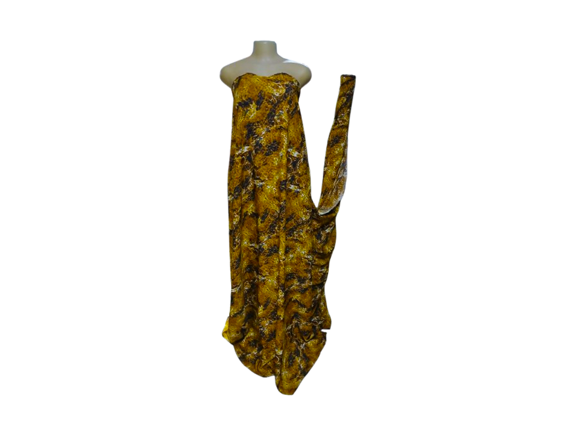
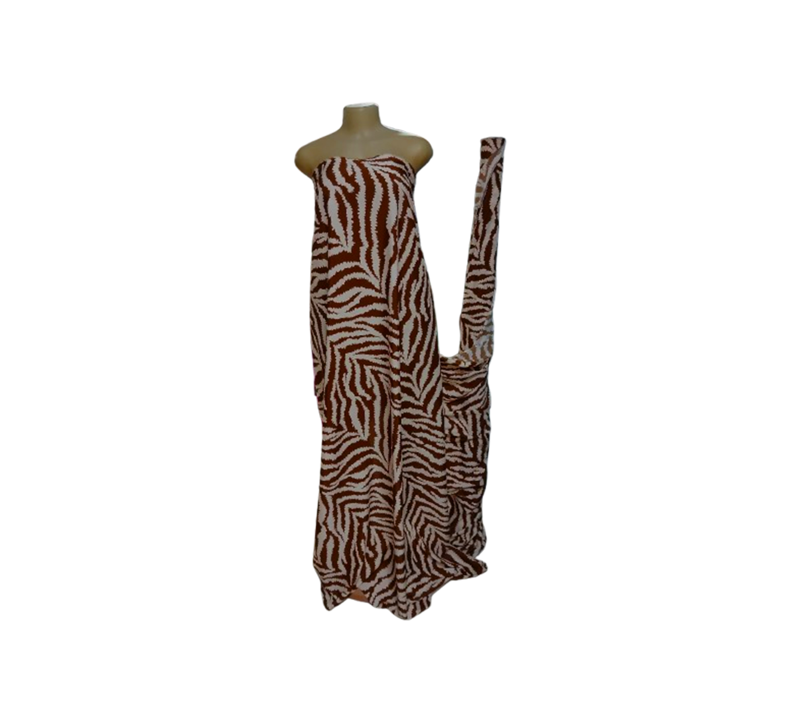
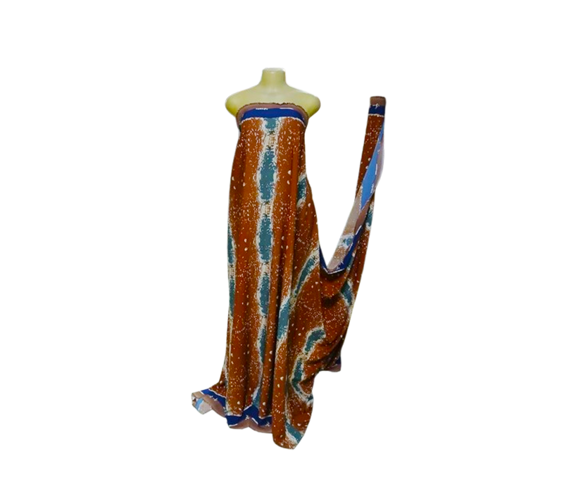

The Mamaliq Silk Experience
"Discover luxury silks, bridal satins, lightweight charmeuse, and structured duchess fabrics at Mamaliq Fabrics, Nairobi CBD. Browse high-resolution textile textures, compare prices per meter, and order seamlessly via WhatsApp for pickup or delivery across Kenya."
Couture Craftsmanship in Nairobi CBD
At Mamaliq Fabrics, we bring the world of fine couture and high-end textiles directly to the heart of Nairobi CBD. We specialize in sourcing the finest grades of pure silks, liquid satins, bridal duchess weaves, and bespoke tailoring materials for designers, couturiers, and fabric connoisseurs.
Whether you are creating an unforgettable bridal gown, a bespoke evening suit, or everyday luxury wear, our carefully curated collection highlights rich textures, vibrant color saturation, and unmatched drape. We combine tactile in-store viewing at our CBD location with an effortless digital shopping experience—giving you direct access to fabric specifications, transparent pricing per meter, and instant consultation via WhatsApp.
Sensory Textures & Motion
Tap or hover over any textile to illuminate its true luster and weave.



Curate Your Next Bespoke Piece
Connect directly with our CBD specialists to check meter availability and custom cuts.